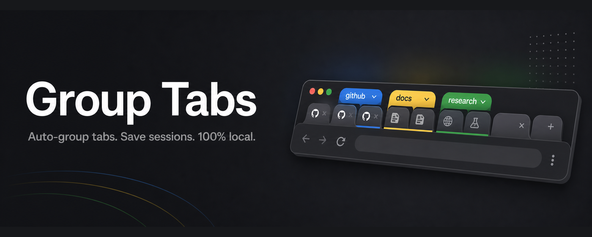
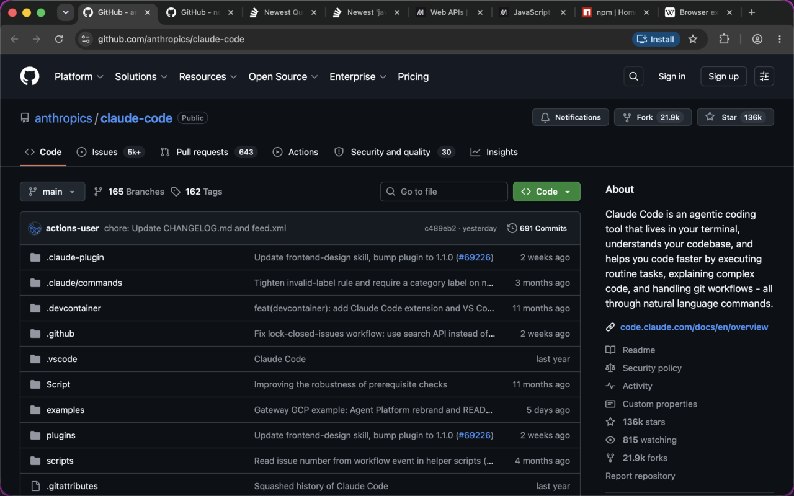
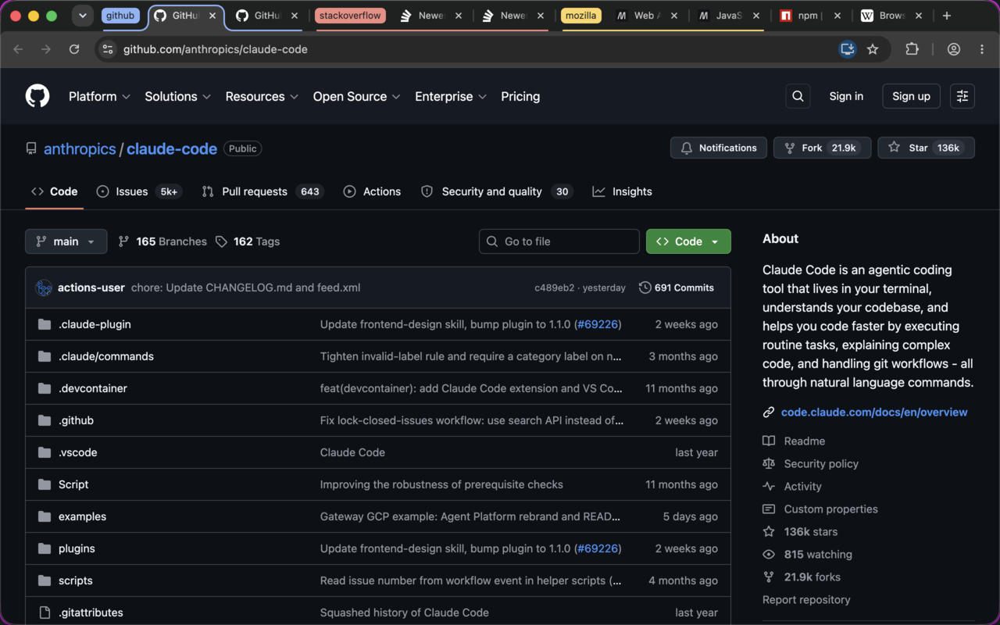

Tame your Chrome tabs.
A Chrome extension that auto-groups your tabs by domain, refines groups by topic with on-device AI — nothing leaves your machine — and snapshots your groups so a crash never loses them.
One click groups every ungrouped tab by domain. A second click asks the on-device model to regroup them by topic.



Instant. Groups ungrouped, unpinned http(s) tabs in the current window by domain. Manual groups and pinned tabs are never touched.
Classifies tabs by topic using Chrome's built-in Prompt API (Gemini Nano). Fully on-device — your tab titles and URLs never leave your machine.
Snapshot all tab groups in a window — titles, colors, URLs — under a name. Reopen the whole set later, regrouped exactly as saved.
Every group change triggers a debounced auto-save. If Chrome crashes and drops your group assignments, restore from the auto-saved snapshot.
No servers, no analytics, no accounts. Snapshots live in chrome.storage.local. See the privacy policy.
The AI path needs Chrome 138+ with the on-device model available; otherwise domain grouping covers it — no cloud fallback, by choice.
Awaiting Chrome Web Store review — until then, load it unpacked. It's three clicks.
git clone https://github.com/krashnakant/group-tabs.git (or download the ZIP from GitHub).chrome://extensions, enable Developer mode (top right).group-tabs folder. Pin the icon, click it, hit Group by domain.The Web Store listing is under review — this page will link straight to it once approved.